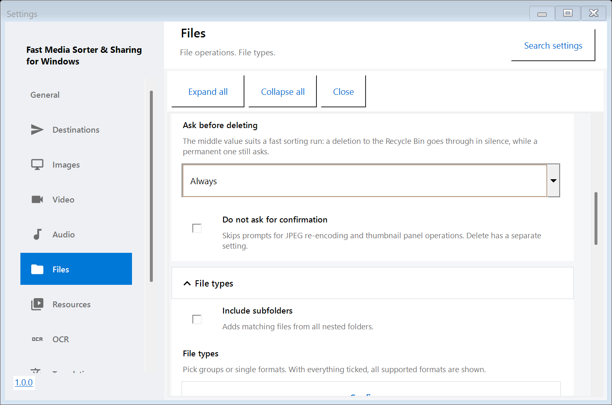

Настройте один раз: просмотрщик по умолчанию, язык и что происходит с файлами
Всё, что ниже, находится за клавишей F2. По умолчанию всё настроено безопасно, поэтому считайте это списком того, что стоит решить для себя, а не обязательной настройкой. Страница описывает окно настроек 64-битного просмотрщика (Windows 10 1607+); в 32-битной резервной сборке окно проще, из пяти вкладок, и большинства названных здесь страниц и групп в нём нет.
Найдите настройку и возвращайтесь к ней
Группы раскрываются независимо. Настройки помнят последнюю страницу, состояния групп и примерную позицию прокрутки. Поиск настроек или Ctrl+F ищет названия, пояснения и варианты значений; результат открывает исходное поле. Развернуть все и Свернуть все действуют на эту страницу. Закрытие сохраняет применённые изменения. Поиск временный, ключи API и личная история в него не попадают. Импорт и экспорт профиля находятся в Общие / Дополнительные настройки; контекст окна остаётся на этом компьютере.
Хранилище содержит лимиты кэшей и их очистку. Размер миниатюр: 96, 128, 192 или 256 px. Масштаб интерфейса умножает масштаб Windows для настроек, плавающих панелей и текстового просмотра. В Общих есть сброс дополнительных настроек с подтверждением и резервной копией; получатели, язык, тема, звук, OCR и личная история сохраняются.
Сделайте программой по умолчанию
На странице Файлы, в группе Клавиши и ассоциации, кнопка Форматы изображений закрепляет за программой те типы картинок, которые она умеет показывать, а Форматы видео - видео и звук, которые она умеет проигрывать. Обе пишут в ваш собственный профиль пользователя, права администратора не нужны, - а Windows может дополнительно попросить подтвердить выбор в своих параметрах приложений при первом двойном щелчке по файлу.

Страница «Файлы»: операции с файлами и тематические группы. Язык и тема находятся в «Общих».
Выберите язык интерфейса
В 64-битном просмотрщике тринадцать языков (в 32-битной резервной сборке - только русский и английский). При самом первом запуске она следует языку интерфейса Windows, а дальше решает ваш выбор: двухбуквенная кнопка на панели переключает язык мгновенно, та же настройка есть в Общие / Основные настройки. Арабский и урду разворачивают окно справа налево; хинди, бенгальский и китайский переключаются на шрифт, умеющий рисовать их письмо.
Решите, что происходит с файлом
Группа Файлы / Основные настройки - то, что стоит прочитать перед большим разбором:
Совпадение имён - спрашивать, пропустить, сохранить оба или заменить, когда в папке-получателе уже есть файл с таким именем.
После копирования или перемещения - следующий файл, остаться на текущем или закрыть, когда файлов не осталось.
Удалять в Корзину и Спрашивать перед удалением - всегда, никогда или только если файл не попадёт в Корзину. У сетевой папки и флешки Корзины нет вовсе, и именно тогда вопрос и нужен.
Сузьте то, что показывается
Пункт Типы файлов ограничивает список теми форматами, которые вам действительно нужны, а Просматривать вложенные папки решает, означает ли папка только свои файлы или всё, что лежит внутри неё. При запуске открывать (Общие / Запуск) выбирает, что показывает обычный запуск: стартовую страницу, последнюю папку или последний файл. Прямо под ним пункт Продолжать с последнего файла делает больше, чем строка выше: он открывает именно тот файл, который был на экране, - а не его номер в папке, - и даёт видео продолжиться с той позиции, где его оставили. По умолчанию выключен, а если файл удалён, переименован или лежит на отключённом диске, окно просто остаётся пустым. Размеры истории недавних файлов и папок - там же, вместе с кнопкой их очистки.
Перенесите настройки на другой компьютер
Экспорт дополнительных настроек сохраняет дополнительные параметры в файл, Импорт дополнительных настроек читает их обратно. Получатели, язык, тема, звук и OCR не включаются. Флажок Включить личные данные решает, поедут ли с ним история папок и позиции просмотра; ключи API и пароли не попадают туда никогда, с флажком или без.
Комфорт просмотра
В группе Общие / Оформление находятся масштаб интерфейса и Уменьшать анимацию; Изображения / Основные настройки задаёт масштаб нового изображения. Если окно кажется мелким, а эффекты - слишком бойкими для вашего монитора, начинать надо оттуда.
Если что-то пошло не так
F2 → О программе → Отправить логи автору соберёт журналы и отчёт о версии, Windows и настройках в архив, покажет, что туда попало, и откроет письмо с вложением. Ничего не уходит, пока вы сами не нажмёте «Отправить». Отправка логов есть только в 64-битном просмотрщике (Windows 10 1607+); в 32-битной резервной сборке её нет.
Настройки находятся в двух окнах. В настройках менеджера есть группа «Общий доступ SFTP» - порт SFTP, локальная сеть и страница хостинга; она видна, пока установлен этот компонент, - рядом с общими параметрами, удалённой учётной записью, публикацией и расписаниями. Установленный локальный сервер обмена настраивается в отдельном окне. Ссылка слева внизу открывает второе окно, сохраняя текущее. Открытие настроек не запускает сервер. В прежних сборках общий доступ SFTP был в отдельном окне.